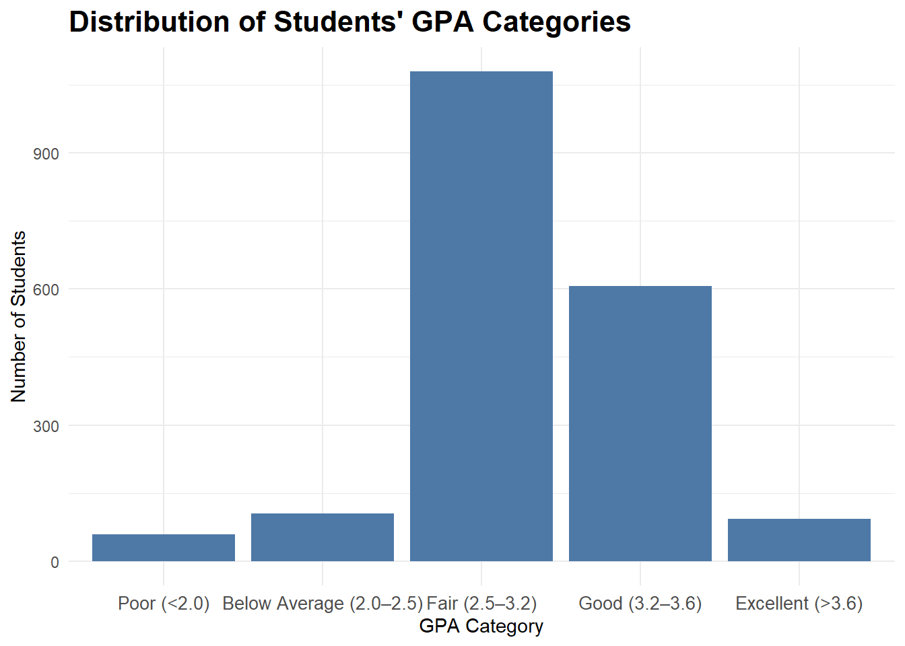
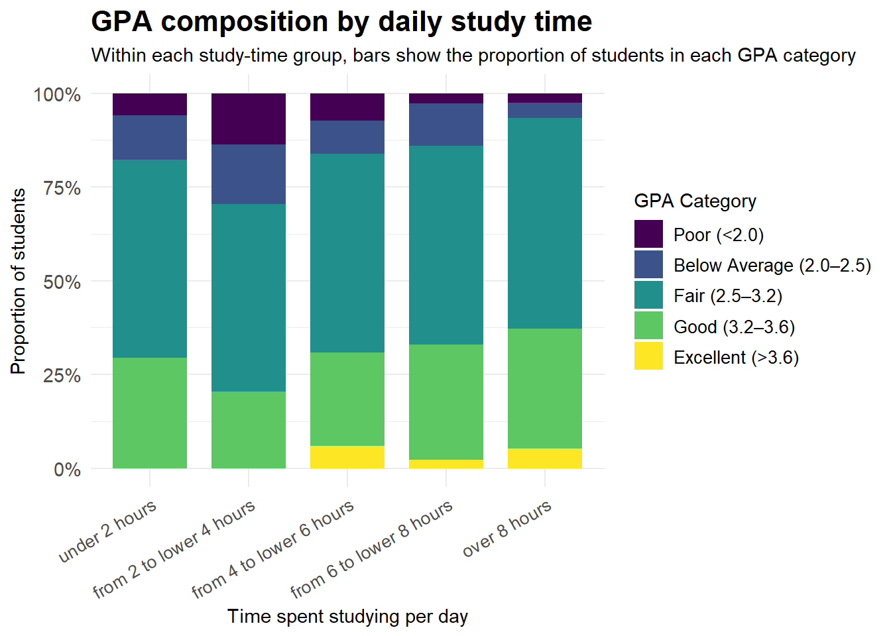
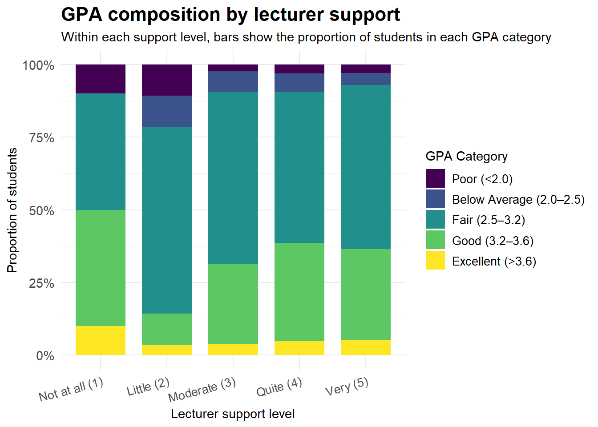
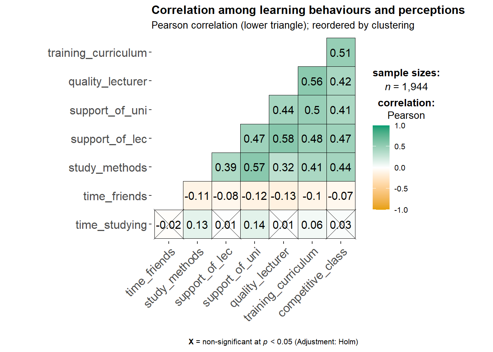
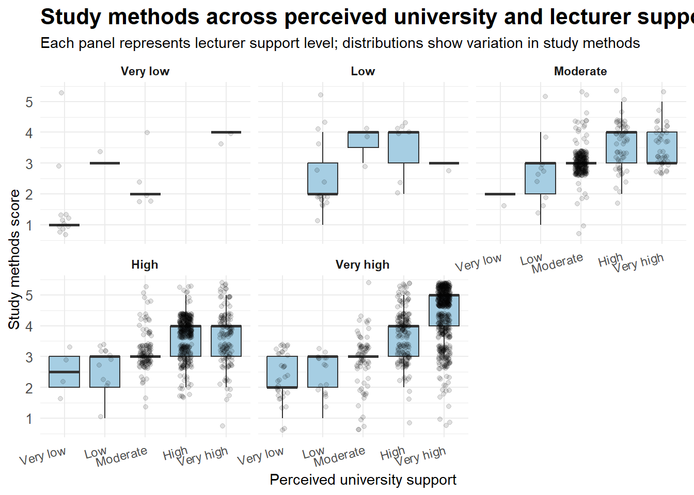
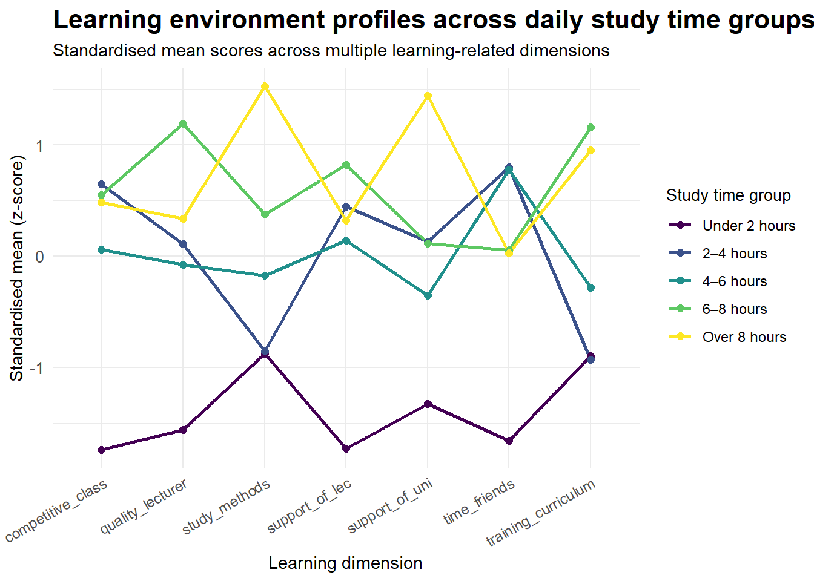

library(pacman)
pacman::p_load(
tidyverse, # data manipulation and ggplot2
readxl, # read Excel files
janitor, # clean variable names
scales, # scale formatting for ggplot
patchwork, # combine multiple ggplot figures
ggthemes # additional ggplot themes
)Take-home Exercise 1
Overview
Setting the scene
Student learning outcomes are influenced by a combination of individual characteristics, learning behaviors, and institutional support. In higher education contexts, factors such as study methods, lecturer support, curriculum suitability, learning environment, and peer influence are often discussed as important contributors to students’ academic performance.
The dataset used in this analysis was collected from students and alumni of the University of Education, Vietnam National University, Hanoi. It provides a survey-based view of students’ demographic backgrounds, perceptions of the learning environment, and self-reported academic outcomes measured by GPA.
Our task
In this take-home exercise, visually-driven exploratory data analysis (EDA) techniques are applied to examine the survey dataset and communicate key findings through statistical graphics.
Specifically, this analysis aims to:
explore the overall distribution of students’ learning outcomes measured by GPA
examine students’ perceptions of key learning-related factors, such as study methods, lecturer support, curriculum suitability, and learning environment
compare differences in learning perceptions and behaviors across different levels of academic performance
identify meaningful patterns and contrasts that provide insights into factors associated with better learning outcomes
Getting started
Load packages
The following R packages are loaded to support data wrangling and visually-driven exploratory data analysis.
The tidyverse family is used for data processing, while ggplot2 and its extensions are used for data visualisation.
Import data
The dataset used in this exercise is a survey dataset on factors affecting learning outcomes of students at the University of Education, Vietnam National University, Hanoi.
The dataset was retrieved from Mendeley Data and is provided in Excel format.
We import this dataset as raw_data.
raw_data <- read_excel("data/Database paper.xlsx") |>
clean_names()
glimpse(raw_data)Rows: 2,170
Columns: 22
$ year <dbl> 5, 5, 5, 5, 5, 5, 5, 5, 5, 5, 5, 5, 5, 5, 5, 5, 5,…
$ gender <dbl> 2, 1, 2, 2, 1, 2, 2, 2, 2, 2, 1, 2, 2, 2, 2, 2, 2,…
$ policy_stu <dbl> 2, 2, 2, 2, 1, 2, 2, 2, 2, 2, 2, 2, 2, 1, 2, 2, 2,…
$ minority_stu <dbl> 2, 2, 2, 2, 2, 2, 2, 2, 2, 2, 2, 2, 2, 2, 2, 2, 2,…
$ poor_stu <dbl> 2, 2, 2, 2, 2, 2, 2, 2, 2, 2, 2, 2, 2, 2, 2, 2, 2,…
$ father_edu <dbl> 4, 3, 4, 5, 2, 5, 6, 5, 5, 5, 3, 3, 3, 3, 3, 4, 5,…
$ mother_edu <dbl> 4, 3, 4, 4, 3, 5, 5, 4, 5, 4, 3, 3, 3, 4, 3, 4, 5,…
$ father_occupation <dbl> 2, 2, 1, 1, 3, 1, 1, 5, 1, 3, 3, 3, 3, 3, 2, 2, 4,…
$ mother_occupation <dbl> 3, 4, 2, 1, 3, 2, 4, 3, 1, 3, 3, 3, 3, 3, 2, 2, 4,…
$ time_friends <dbl> 2, 1, 1, 2, 1, 1, 2, 2, 1, 3, 2, 2, 2, 2, 2, 1, 3,…
$ time_socical_media <dbl> 2, 3, 2, 2, 2, 3, 2, 2, 2, 2, 2, 1, 2, 2, 2, 3, 4,…
$ time_studying <dbl> 5, 5, 5, 5, 1, 2, 5, 5, 5, 5, 5, 5, 5, 1, 5, 5, 5,…
$ gpa <dbl> 4, 3, 4, 4, 4, 4, 3, 5, 5, 3, 3, 4, 4, 3, 5, 4, 4,…
$ adapt_learning_uni <dbl> 4, 3, 4, 4, 5, 4, 4, 4, 4, 3, 4, 4, 4, 5, 4, 4, 5,…
$ study_methods <dbl> 4, 3, 4, 4, 5, 4, 4, 4, 4, 4, 4, 4, 4, 5, 4, 3, 5,…
$ support_of_uni <dbl> 3, 3, 4, 5, 5, 5, 5, 5, 4, 5, 4, 4, 4, 5, 4, 4, 5,…
$ support_of_lec <dbl> 4, 4, 4, 5, 5, 4, 5, 4, 4, 5, 4, 4, 4, 5, 4, 4, 5,…
$ facilitie_uni <dbl> 4, 4, 3, 5, 5, 5, 5, 4, 4, 5, 4, 4, 4, 5, 4, 3, 5,…
$ quality_lecturer <dbl> 4, 3, 4, 5, 5, 5, 4, 5, 5, 5, 4, 4, 4, 5, 4, 4, 5,…
$ training_curriculum <dbl> 4, 3, 4, 4, 5, 4, 5, 4, 4, 5, 4, 4, 4, 5, 4, 3, 5,…
$ competitive_class <dbl> 3, 3, 4, 4, 4, 3, 4, 3, 4, 4, 4, 4, 4, 5, 4, 4, 5,…
$ infuence_f_friends <dbl> 3, 4, 4, 4, 5, 3, 5, 4, 4, 4, 4, 4, 4, 5, 4, 5, 4,…Data pre-processing
We first take an initial look at the dataset to understand its structure and variable types.
We then check whether there are any duplicate records in the survey responses.
glimpse(raw_data)Rows: 2,170
Columns: 22
$ year <dbl> 5, 5, 5, 5, 5, 5, 5, 5, 5, 5, 5, 5, 5, 5, 5, 5, 5,…
$ gender <dbl> 2, 1, 2, 2, 1, 2, 2, 2, 2, 2, 1, 2, 2, 2, 2, 2, 2,…
$ policy_stu <dbl> 2, 2, 2, 2, 1, 2, 2, 2, 2, 2, 2, 2, 2, 1, 2, 2, 2,…
$ minority_stu <dbl> 2, 2, 2, 2, 2, 2, 2, 2, 2, 2, 2, 2, 2, 2, 2, 2, 2,…
$ poor_stu <dbl> 2, 2, 2, 2, 2, 2, 2, 2, 2, 2, 2, 2, 2, 2, 2, 2, 2,…
$ father_edu <dbl> 4, 3, 4, 5, 2, 5, 6, 5, 5, 5, 3, 3, 3, 3, 3, 4, 5,…
$ mother_edu <dbl> 4, 3, 4, 4, 3, 5, 5, 4, 5, 4, 3, 3, 3, 4, 3, 4, 5,…
$ father_occupation <dbl> 2, 2, 1, 1, 3, 1, 1, 5, 1, 3, 3, 3, 3, 3, 2, 2, 4,…
$ mother_occupation <dbl> 3, 4, 2, 1, 3, 2, 4, 3, 1, 3, 3, 3, 3, 3, 2, 2, 4,…
$ time_friends <dbl> 2, 1, 1, 2, 1, 1, 2, 2, 1, 3, 2, 2, 2, 2, 2, 1, 3,…
$ time_socical_media <dbl> 2, 3, 2, 2, 2, 3, 2, 2, 2, 2, 2, 1, 2, 2, 2, 3, 4,…
$ time_studying <dbl> 5, 5, 5, 5, 1, 2, 5, 5, 5, 5, 5, 5, 5, 1, 5, 5, 5,…
$ gpa <dbl> 4, 3, 4, 4, 4, 4, 3, 5, 5, 3, 3, 4, 4, 3, 5, 4, 4,…
$ adapt_learning_uni <dbl> 4, 3, 4, 4, 5, 4, 4, 4, 4, 3, 4, 4, 4, 5, 4, 4, 5,…
$ study_methods <dbl> 4, 3, 4, 4, 5, 4, 4, 4, 4, 4, 4, 4, 4, 5, 4, 3, 5,…
$ support_of_uni <dbl> 3, 3, 4, 5, 5, 5, 5, 5, 4, 5, 4, 4, 4, 5, 4, 4, 5,…
$ support_of_lec <dbl> 4, 4, 4, 5, 5, 4, 5, 4, 4, 5, 4, 4, 4, 5, 4, 4, 5,…
$ facilitie_uni <dbl> 4, 4, 3, 5, 5, 5, 5, 4, 4, 5, 4, 4, 4, 5, 4, 3, 5,…
$ quality_lecturer <dbl> 4, 3, 4, 5, 5, 5, 4, 5, 5, 5, 4, 4, 4, 5, 4, 4, 5,…
$ training_curriculum <dbl> 4, 3, 4, 4, 5, 4, 5, 4, 4, 5, 4, 4, 4, 5, 4, 3, 5,…
$ competitive_class <dbl> 3, 3, 4, 4, 4, 3, 4, 3, 4, 4, 4, 4, 4, 5, 4, 4, 5,…
$ infuence_f_friends <dbl> 3, 4, 4, 4, 5, 3, 5, 4, 4, 4, 4, 4, 4, 5, 4, 5, 4,…nrow(raw_data)[1] 2170sum(duplicated(raw_data))[1] 226raw_data <- distinct(raw_data)
nrow(raw_data)[1] 1944Check for duplicates
Using the duplicated function, we check whether there are any duplicate entries in the dataset.
raw_data[duplicated(raw_data), ]# A tibble: 0 × 22
# ℹ 22 variables: year <dbl>, gender <dbl>, policy_stu <dbl>,
# minority_stu <dbl>, poor_stu <dbl>, father_edu <dbl>, mother_edu <dbl>,
# father_occupation <dbl>, mother_occupation <dbl>, time_friends <dbl>,
# time_socical_media <dbl>, time_studying <dbl>, gpa <dbl>,
# adapt_learning_uni <dbl>, study_methods <dbl>, support_of_uni <dbl>,
# support_of_lec <dbl>, facilitie_uni <dbl>, quality_lecturer <dbl>,
# training_curriculum <dbl>, competitive_class <dbl>, …Check and handle missing values
We check the dataset for missing values to determine whether any further data cleaning is required before analysis.
colSums(is.na(raw_data)) year gender policy_stu minority_stu
0 0 0 0
poor_stu father_edu mother_edu father_occupation
0 0 0 0
mother_occupation time_friends time_socical_media time_studying
0 0 0 0
gpa adapt_learning_uni study_methods support_of_uni
0 0 0 0
support_of_lec facilitie_uni quality_lecturer training_curriculum
0 0 0 0
competitive_class infuence_f_friends
0 0 Preparing data for selected variables
To support the subsequent visual analysis, we prepare an analysis-ready dataset by selecting survey variables that are directly related to students’ learning outcomes, learning perceptions, and study behaviours.
target_cols <- c(
"year",
"gender",
"policy_stu",
"minority_stu",
"poor_stu",
"father_edu",
"mother_edu",
"father_occupation",
"mother_occupation",
"time_friends",
"time_studying",
"gpa",
"adapt_learning_uni",
"study_methods",
"support_of_uni",
"support_of_lec",
"facilitie_uni",
"quality_lecturer",
"training_curriculum",
"competitive_class"
)
analysis_data <- raw_data %>%
select(all_of(target_cols))
setdiff(target_cols, names(raw_data))character(0)glimpse(analysis_data)Rows: 1,944
Columns: 20
$ year <dbl> 5, 5, 5, 5, 5, 5, 5, 5, 5, 5, 5, 5, 5, 5, 5, 5, 5,…
$ gender <dbl> 2, 1, 2, 2, 1, 2, 2, 2, 2, 2, 1, 2, 2, 2, 2, 2, 2,…
$ policy_stu <dbl> 2, 2, 2, 2, 1, 2, 2, 2, 2, 2, 2, 2, 2, 1, 2, 2, 2,…
$ minority_stu <dbl> 2, 2, 2, 2, 2, 2, 2, 2, 2, 2, 2, 2, 2, 2, 2, 2, 2,…
$ poor_stu <dbl> 2, 2, 2, 2, 2, 2, 2, 2, 2, 2, 2, 2, 2, 2, 2, 2, 2,…
$ father_edu <dbl> 4, 3, 4, 5, 2, 5, 6, 5, 5, 5, 3, 3, 3, 3, 3, 4, 5,…
$ mother_edu <dbl> 4, 3, 4, 4, 3, 5, 5, 4, 5, 4, 3, 3, 3, 4, 3, 4, 5,…
$ father_occupation <dbl> 2, 2, 1, 1, 3, 1, 1, 5, 1, 3, 3, 3, 3, 3, 2, 2, 4,…
$ mother_occupation <dbl> 3, 4, 2, 1, 3, 2, 4, 3, 1, 3, 3, 3, 3, 3, 2, 2, 4,…
$ time_friends <dbl> 2, 1, 1, 2, 1, 1, 2, 2, 1, 3, 2, 2, 2, 2, 2, 1, 3,…
$ time_studying <dbl> 5, 5, 5, 5, 1, 2, 5, 5, 5, 5, 5, 5, 5, 1, 5, 5, 5,…
$ gpa <dbl> 4, 3, 4, 4, 4, 4, 3, 5, 5, 3, 3, 4, 4, 3, 5, 4, 4,…
$ adapt_learning_uni <dbl> 4, 3, 4, 4, 5, 4, 4, 4, 4, 3, 4, 4, 4, 5, 4, 4, 5,…
$ study_methods <dbl> 4, 3, 4, 4, 5, 4, 4, 4, 4, 4, 4, 4, 4, 5, 4, 3, 5,…
$ support_of_uni <dbl> 3, 3, 4, 5, 5, 5, 5, 5, 4, 5, 4, 4, 4, 5, 4, 4, 5,…
$ support_of_lec <dbl> 4, 4, 4, 5, 5, 4, 5, 4, 4, 5, 4, 4, 4, 5, 4, 4, 5,…
$ facilitie_uni <dbl> 4, 4, 3, 5, 5, 5, 5, 4, 4, 5, 4, 4, 4, 5, 4, 3, 5,…
$ quality_lecturer <dbl> 4, 3, 4, 5, 5, 5, 4, 5, 5, 5, 4, 4, 4, 5, 4, 4, 5,…
$ training_curriculum <dbl> 4, 3, 4, 4, 5, 4, 5, 4, 4, 5, 4, 4, 4, 5, 4, 3, 5,…
$ competitive_class <dbl> 3, 3, 4, 4, 4, 3, 4, 3, 4, 4, 4, 4, 4, 5, 4, 4, 5,…Insight 1: Distribution of students’ learning outcomes (GPA)

gpa_order <- c(
"Poor (<2.0)",
"Below Average (2.0–2.5)",
"Fair (2.5–3.2)",
"Good (3.2–3.6)",
"Excellent (>3.6)"
)
analysis_data %>%
mutate(
gpa_cat = factor(
gpa,
levels = 1:5,
labels = gpa_order,
ordered = TRUE
)
) %>%
ggplot(aes(x = gpa_cat)) +
geom_bar(fill = "#4E79A7") +
labs(
title = "Distribution of Students' GPA Categories",
x = "GPA Category",
y = "Number of Students"
) +
theme_minimal()### Codeanalysis_data %>%
ggplot(aes(x = gpa)) +
geom_bar(fill = "#4E79A7") +
labs(
title = "Distribution of Students' GPA Categories",
x = "GPA Category",
y = "Number of Students"
) +
theme_minimal()Insights
- The distribution of GPA shows that most students fall within the middle performance categories, particularly Fair (2.5–3.2) and Good (3.2–3.6).
- Relatively fewer students are observed at the extreme ends of the distribution, namely Poor (<2.0) and Excellent (>3.6).
- This pattern suggests that student academic performance is largely concentrated around average levels, indicating that incremental improvements among mid-performing students could lead to substantial overall gains in learning outcomes.
Insight 2: GPA composition differs across daily study-time groups (Time_Studying)

analysis_data %>%
mutate(
Time_Studying_cat = factor(time_studying, levels = 1:5, labels = study_order, ordered = TRUE),
GPA_cat = factor(gpa, levels = 1:5, labels = gpa_order, ordered = TRUE)
) %>%
filter(!is.na(Time_Studying_cat), !is.na(GPA_cat)) %>%
ggplot(aes(x = Time_Studying_cat, fill = GPA_cat)) +
geom_bar(position = "fill", width = 0.75) +
scale_y_continuous(labels = scales::percent_format(accuracy = 1)) +
labs(
title = "GPA composition by daily study time",
subtitle = "Within each study-time group, bars show the proportion of students in each GPA category",
x = "Time spent studying per day",
y = "Proportion of students",
fill = "GPA Category"
) +
theme_minimal()Insights
- Students who study longer per day tend to show a higher share of upper GPA categories (Good and Excellent) in the composition.
- Lower study-time groups are more concentrated in the mid-range categories, particularly Fair and Average.
- Overall, the stacked proportions indicate that study time is associated with a shift in GPA distribution toward higher performance groups.
Insight 3: Relationship between lecture support and students’ GPA performance

analysis_data %>%
mutate(
support_cat = factor(support_of_lec, levels = 1:5, labels = support_order, ordered = TRUE),
GPA_cat = factor(gpa, levels = 1:5, labels = gpa_order, ordered = TRUE)
) %>%
filter(!is.na(support_cat), !is.na(GPA_cat)) %>%
ggplot(aes(x = support_cat, fill = GPA_cat)) +
geom_bar(position = "fill", width = 0.75) +
scale_y_continuous(labels = scales::percent_format(accuracy = 1)) +
labs(
title = "GPA composition by lecturer support",
subtitle = "Within each support level, bars show the proportion of students in each GPA category",
x = "Lecturer support level",
y = "Proportion of students",
fill = "GPA Category"
) +
theme_minimal()Insights
- The composition of GPA categories varies across different levels of perceived lecture support.Students who report higher levels of lecture support tend to have a larger proportion in the Good (3.2–3.6) and Excellent (>3.6) GPA categories, while lower support levels are associated with a higher share of Poor and Below Average performance.
- This suggests that perceived instructional support may play an important role in enhancing students’ academic outcomes, highlighting the value of effective teaching practices and academic guidance.
Insight 4: Association between learning behaviours and perceived learning environment

library(dplyr)
library(ggstatsplot)
eda_vars <- analysis_data %>%
select(
time_studying,
time_friends,
study_methods,
support_of_lec,
support_of_uni,
quality_lecturer,
training_curriculum,
competitive_class
) %>%
na.omit()
ggstatsplot::ggcorrmat(
data = eda_vars,
cor.vars = 1:ncol(eda_vars),
type = "parametric",
matrix.type = "lower",
hc.order = TRUE,
title = "Correlation among learning behaviours and perceptions",
subtitle = "Pearson correlation (lower triangle); reordered by clustering"
)Insights
- The correlation matrix suggests a clear “perceived learning environment” cluster, where support from lecturers, support from university, lecturer quality, training curriculum, study methods, and competitive class climate are moderately and positively related (most correlations roughly in the 0.32–0.58 range).
- The strongest links appear around institutional/teaching factors: for example, support from lecturers correlates strongly with lecturer quality (r ≈ 0.58) and also shows a noticeable association with study methods (r ≈ 0.57).
- Training curriculum also aligns with perceived teaching quality and environment, showing moderate positive correlations (e.g., with lecturer quality r ≈ 0.56, and with competitive class r ≈ 0.51).
- Time with friends tends to have small negative correlations with academic/support-related variables (around −0.07 to −0.13), implying that more social time is weakly associated with lower ratings on study behaviours/support perceptions, though the effects are modest.
Insight 6: Study methods across perceived institutional and lecturer support levels

support_order <- c(
"Very low",
"Low",
"Moderate",
"High",
"Very high"
)
plot_data6 <- analysis_data %>%
mutate(
uni_support_cat = factor(
as.integer(support_of_uni),
levels = 1:5,
labels = support_order,
ordered = TRUE
),
lec_support_cat = factor(
as.integer(support_of_lec),
levels = 1:5,
labels = support_order,
ordered = TRUE
)
) %>%
filter(!is.na(study_methods),
!is.na(uni_support_cat),
!is.na(lec_support_cat))
ggplot(plot_data6,
aes(x = uni_support_cat, y = study_methods)) +
geom_boxplot(outlier.shape = NA, fill = "#A6CEE3") +
geom_jitter(width = 0.15, alpha = 0.12) +
facet_wrap(~ lec_support_cat) +
labs(
title = "Study methods across perceived university and lecturer support",
subtitle = "Each panel represents lecturer support level; distributions show variation in study methods",
x = "Perceived university support",
y = "Study methods score"
) +
theme_minimal()Insights
- The distribution of study methods varies systematically across perceived levels of institutional and lecturer support.
- Higher perceived support levels are generally associated with higher median study-method scores, suggesting that supportive learning environments may encourage more effective or diverse learning strategies.
- The faceted view highlights that lecturer support further moderates this relationship, indicating that both institutional and instructional factors jointly shape students’ learning behaviours.
Insight 7: Learning environment profiles across study time groups

profile_vars <- c(
"study_methods",
"time_friends",
"competitive_class",
"support_of_uni",
"support_of_lec",
"training_curriculum",
"quality_lecturer"
)
profile_data <- analysis_data %>%
select(time_studying, all_of(profile_vars)) %>%
drop_na() %>%
mutate(
study_time_cat = factor(
time_studying,
levels = 1:5,
labels = c(
"Under 2 hours",
"2–4 hours",
"4–6 hours",
"6–8 hours",
"Over 8 hours"
),
ordered = TRUE
)
) %>%
group_by(study_time_cat) %>%
summarise(across(all_of(profile_vars), mean), .groups = "drop") %>%
pivot_longer(
cols = all_of(profile_vars),
names_to = "dimension",
values_to = "mean_score"
) %>%
group_by(dimension) %>%
mutate(z_score = scale(mean_score)[, 1]) %>%
ungroup()
ggplot(profile_data,
aes(x = dimension, y = z_score,
group = study_time_cat,
colour = study_time_cat)) +
geom_line() +
geom_point() +
theme_minimal()Insights
- Students with higher daily study time exhibit a distinct learning environment profile characterised by stronger study methods, higher perceived institutional and lecturer support, and more positive evaluations of curriculum quality.
- Lower study-time groups show relatively higher social engagement and weaker alignment across academic-support dimensions, suggesting different learning–social trade-offs.
- The multi-dimensional profiles highlight that study behaviour is embedded within a broader learning ecosystem, where institutional, instructional, and social factors jointly vary with study intensity.
Summary and conclusion
Based on the exploratory data analysis (EDA) conducted in this study, several key patterns emerge regarding students’ learning behaviours, perceptions of the learning environment, and their associated study contexts.
First, the distribution of students’ academic performance indicates that learning outcomes are largely concentrated around middle performance categories. Extreme outcomes are relatively uncommon, suggesting that the majority of students operate within a moderate academic range. This highlights the importance of understanding factors that differentiate learning experiences within this broad middle group rather than focusing solely on outliers.
Second, study behaviour exhibits clear variation across daily study time groups. Students who report longer study durations tend to display more structured study methods and are embedded within learning environments characterised by stronger institutional and instructional support. In contrast, lower study-time groups show relatively higher engagement in social activities, indicating different trade-offs between academic and social time allocation.
Third, perceptions of the learning environment—such as lecturer support, curriculum quality, and institutional resources—vary systematically with students’ study patterns. Higher study engagement is generally associated with more positive evaluations across these dimensions, suggesting that learning behaviour and perceived learning context are closely interrelated.
Finally, a multi-dimensional profiling of learning-related variables reveals that students’ study experiences are shaped by a combination of behavioural, social, and institutional factors rather than by any single dimension alone. The observed patterns underscore the value of holistic exploratory analysis in uncovering complex learning ecosystems within educational data.
Overall, this EDA provides a comprehensive overview of the structure and variability of students’ learning experiences. The findings serve as a foundation for subsequent analytical tasks and demonstrate how exploratory visualisation can be used to generate meaningful insights into educational datasets.
References
Wilke, C. O. (2019). Fundamentals of Data Visualization: A Primer on Making Informative and Compelling Figures. https://clauswilke.com/dataviz/
Wickham, H., Çetinkaya-Rundel, M., & Grolemund, G. (2023). R for Data Science (2nd ed.). O’Reilly Media. https://r4ds.hadley.nz/
Wickham, H. (2016). ggplot2: Elegant Graphics for Data Analysis. Springer. https://ggplot2-book.org/